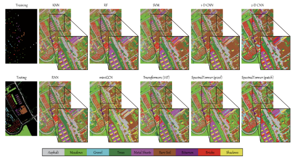

项目目的：高光谱遥感在国民经济、国防建设等方面发挥了重要的作用，被广泛用于地表分类、目标探测、资源监测等。但是高光谱遥感图像较高的光谱分辨率给传统的图像分类识别算法提出严峻的挑战。波段维数的增加不仅加重了数据的存储与传输的负担，同时也加剧了数据处理过程的复杂性，并且由于波段与波段间存在着大量的冗余信息，从而使得传统图像分类算法并不适用于高光谱遥感 图像的分类。传统的分类方法往往需要很多数目的已知类别的训练样本，从而导致计算量大，时间复杂度高。另外，如果训练样本的数目较少，采用传统分类算法进行分类时分类精度往往是很低的，因此我们研究的目的是提高分类精度并减少运算量以及给予每一像元唯一的类别标识。
基本思路：
高光谱图像分类作为高光谱图像的基础研究，一直是高光谱图像重要的信息获取手段，它的主要目标是根据待测地物的空间几何信息与光谱信息将图像中的每个像素划分为不同的类别。高光谱图像分类按照是否有已知类别的训练样本的参与，高光谱图像的分类方式分为监督分类与非监督分类。 在遥感图像自动分类中，传统的基于数理统计的分类方法，主要包括最小距离分类、最大似然分类、波谱角分类、混合距离法分类等，主要依赖地物的光谱属性，基于单个像元进行分类。统计模式识别方法本身的不足：1、最大似然法计算强度大，且要求数据服从正态分布 2、K-means 聚类分类精度低，分类精度依赖于初始聚类中心3、最小距离法没有考虑各类别的协方差矩阵，对训练样本数目要求低，近年来对于神经网络分类方法的研究相当活跃。它区别于传统的分类方法：在处理模式分类问题时，并不基于某个假定的概率分布，在无监督分类中，从特征空间到模式空间的映射是通过网络自组织完成的。在监督分类中，网络通过对训练样本的学习，获得权值，形成分类器，且具备容错性。人工神经网络（ANN）分类方法一般可以获得更高精度的分类结果， 因此 ANN 方法在遥感分类中被广泛应用，特别是对于复杂类型的地物类型分类，ANN 方法显示了其优越性。专家系统分类法也在遥感分类取得了一定的应用。专家系统是模拟人类逻辑思维的智能系统，将其应用于遥感分类最大的优点就是可以充分利用更多的辅助分类数据。不过由于专家系统知识库难以建立，影响了它的进一步发展。支持向量机（SVM）具有严格的理论基础，能较好地解决小样本、非线性、高维数等问题，被成功地应用到多光谱、高光谱遥感图像分类领域。对于高光谱数据而言，由于波段多、数据量大、数据不确定性等，易受 Hughes 现象（即训练样本固定时，分类精度随特征维数的增加而下降）影响。而样本的获取在高光谱分类中往往是一项比较困难的工作，特别是采用高维特征向量时要求每类的样本数都要比特征维数高，因此在高维信息处理中的精度与效率和高光谱遥感信息精细光谱与大数据量之间仍然存在着极大的矛盾。
在我国航空航天业快速发展的背景下，本项目有助于建立对地面实行大范围、多维度以及高精度的动态观测系统，在土地覆盖调研、环境监测以及资源调查等多个领域具有重大应用价值，同时在国防安全和公共基础等领域中也有巨大的发展潜力。本项目为高光谱图像分类提供了一个新的解决办法，建立基于Transformer的高光谱图像分类系统，可以提高分类精度并减少运算量以及给予每一像元唯一的类别标识，可行性高、实用性强。 本项目研究涉及深度学习、光学等领域，属于应用基础研究，涉及高光谱处理技术的研究热点，在地物识别与分类领域有着独特优势，为后续的高光谱图像应用提供坚实可靠的地物信息基础。
我们希望利用Transformer有效提取高光谱图像的空间-光谱特征，找到一种基于深度Transformer的高光谱影像分类方法。
本项目组拟建立基于Transformer的高光谱图像分类系统，具体包括：
下图为高光谱图像分类系统架构图，使用VGG16来提取空间特征，使用 DenseTransformer来捕获序列谱关系，并使用MLP完成最终的分类任务；将动态特征增强，缓解过拟合问题，从而很好地泛化模型；针对HSI分类中训练样本有限的问题，将迁移学习与模型相结合。
在互联网获取经典高光谱实例作为训练样本，系统抛出结果后与期望结果进行对比，参考各种相关系数，基于transformer的神经网络系统将会自动更新权重以达到更接近期望结果的目的。同时与代表性的骨干网络进行对比实验，优化算法。
下图为分类结果显示